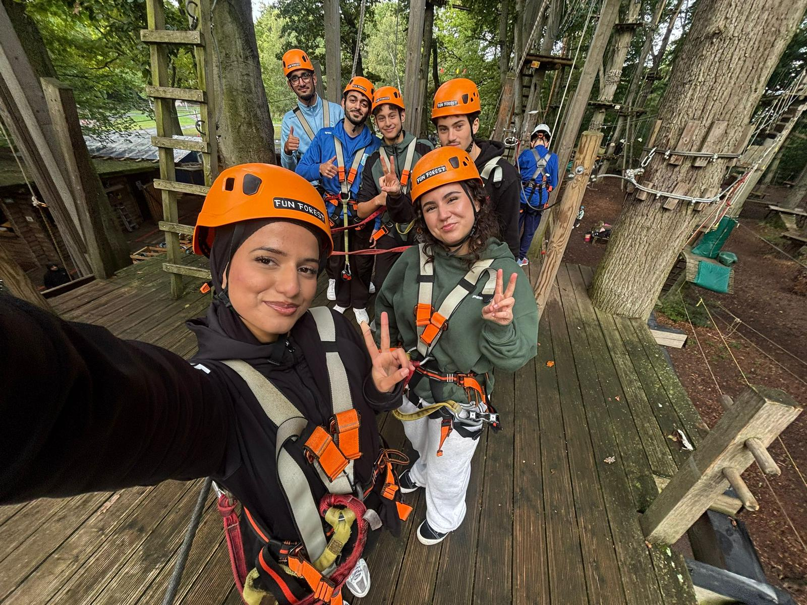

Im Laufe des Projektjahres haben wir drei Orte besucht, die jeweils einen eigenen Zugang zum Thema Klimawandel ermöglichten – von Messdaten über Wissenschaftskommunikation bis hin zu konkreten Handlungsperspektiven.
Deutscher Wetterdienst (DWD)
.jpeg)
.jpeg)
.jpeg)
- 1 – Lufttemperatur: amtliche Messung in 2 m Höhe
- 2 – Datenlogger: sammelt alle Sensordaten
- 3 – Luftfeuchtigkeit: Sensor in der Wetterhütte
- 6 – Bodennahe Temperatur: in 5 cm Höhe (Bodenfrost)
- 7 – Niederschlagsmesser mit Windschutzring
- 8 – Erdbodentemperatur, flach
- 11 – Erdbodentemperatur, mitteltief
- 12 – Globalstrahlung: Sonnenintensität
- 13 – Erdbodentemperatur, tief (bis 1 m)

.jpeg)
Hier kommt eine Beschreibung des Besuchs: Was haben wir gesehen, wer hat uns geführt, was war das Programm?
Was wir gelernt haben
Hier können die Schülerinnen und Schüler beschreiben, welche Erkenntnisse sie mitgenommen haben – z.B. über Messmethoden, Klimamodelle oder konkrete Wetterdaten für Hessen.
„Hier ein Zitat von jemandem aus dem Kurs oder von einem DWD-Mitarbeiter."
— Name, Klasse / Funktion
Hochseilgarten
Am selben Tag waren wir auch noch im Hochseilgarten. Das war die perfekte Gelegenheit, um einfach mal Spaß zu haben und ein bisschen abzuschalten. Gleichzeitig war es total schön, mitten in der Natur zu sein. Das hat uns noch einmal richtig bewusst gemacht, wie wichtig und schützenswert unsere Umwelt ist.
.jpeg)
.jpeg)
.jpeg)
.jpeg)

EXPERIMENTA Frankfurt
Hier kommt eine Beschreibung des Besuchs: Welche Ausstellungsbereiche haben wir erkundet, welche Experimente oder Exponate standen im Mittelpunkt?
Was wir gelernt haben
Hier beschreiben die Schülerinnen und Schüler, was sie in der EXPERIMENTA mitgenommen haben – z.B. interaktive Klimaexperimente, Treibhauseffekt-Demonstrationen oder Energiewendeausstellung.
„Hier ein Zitat von jemandem aus dem Kurs."
— Name, Klasse
Highlights
Exponat / Thema
Titel des Highlights
Kurze Beschreibung, was an diesem Exponat oder Bereich besonders war.
Exponat / Thema
Titel des Highlights
Kurze Beschreibung, was an diesem Exponat oder Bereich besonders war.
Exponat / Thema
Titel des Highlights
Kurze Beschreibung, was an diesem Exponat oder Bereich besonders war.
basa eV · Neu-Anspach
Hier kommt eine Beschreibung des mehrtägigen Aufenthalts bei basa eV: Wo haben wir gewohnt, was war das Programm, welche Themen haben wir bearbeitet?
Workshops & Programm
Hier beschreiben die Schülerinnen und Schüler, welche Workshops stattfanden – z.B. Klimagerechtigkeit im globalen Kontext, Handlungsperspektiven, Gruppenarbeiten.
Sozialer Landwirtschaftsbetrieb
Hier kann der Besuch des landwirtschaftlichen Betriebs beschrieben werden – was dort produziert wird, wie Nachhaltigkeit dort gelebt wird und was die Schüler mitgenommen haben.
„Hier ein längeres Zitat, das den Aufenthalt bei basa eV zusammenfasst – aus der Perspektive eines Schülers oder einer Schülerin."
— Name, Klasse